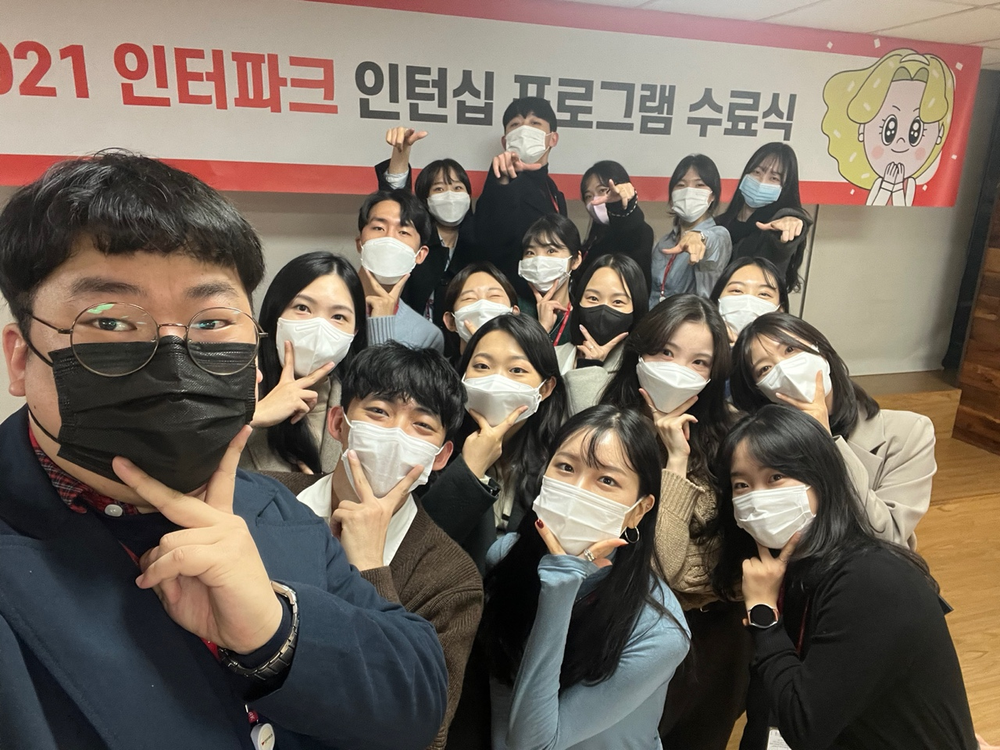
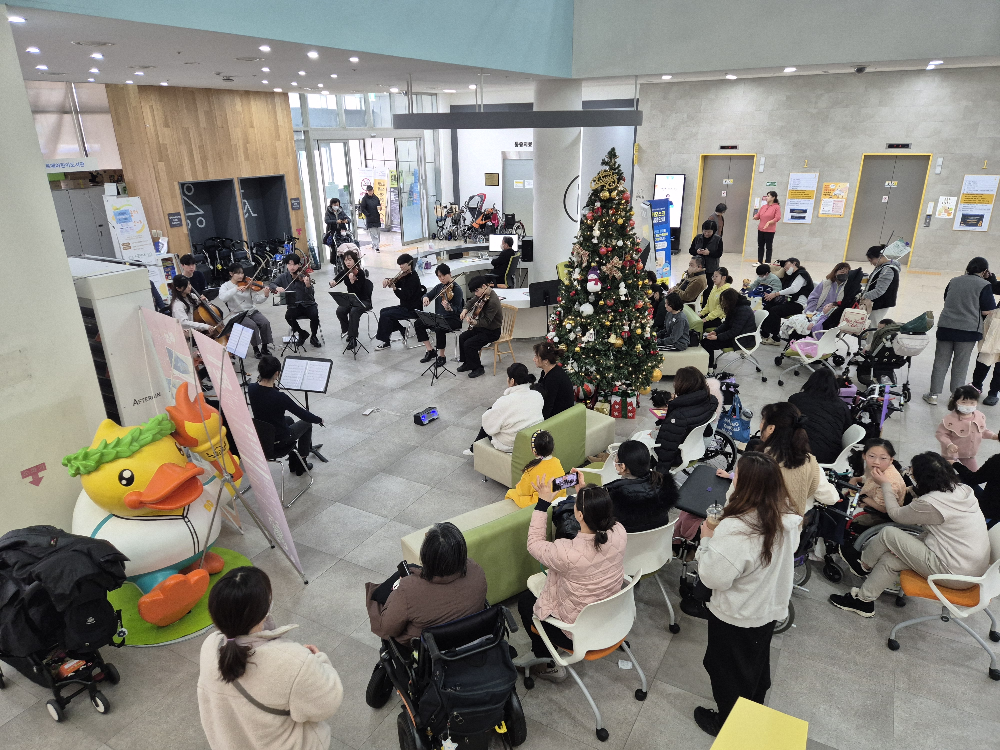
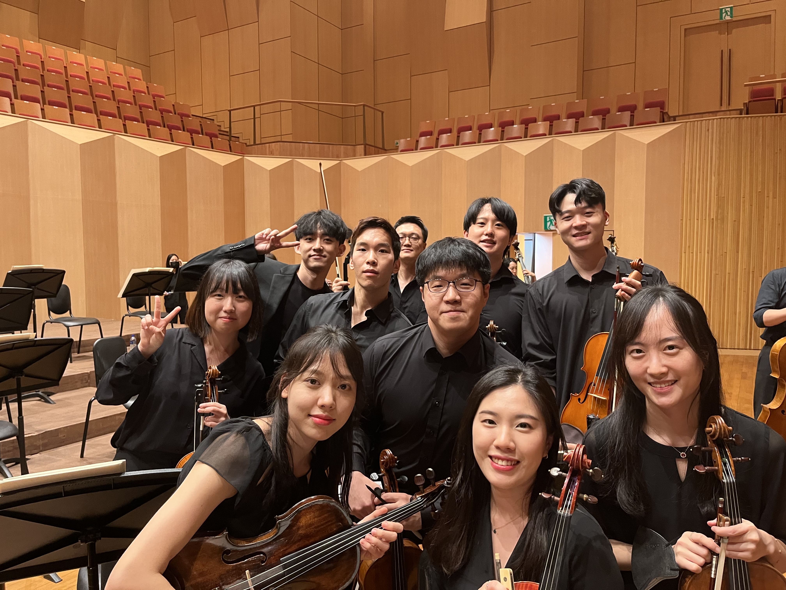

About Me
빠른 확인: 대표 KPI 프로젝트 · 팀 운영 사례 · 채용/협업 문의

데이터와 사람, 그 연결점에서 가치를 만드는 PM
안녕하세요, 최원혁입니다. "Ben Leads Project"라는 이름에는 영화 "인턴"의 주인공 Ben Whittaker에서 영감을 받은 저의 철학이 담겨 있습니다. Ben처럼 상대방의 의견에 귀 기울이고 소통의 가치를 중시하며, 프로젝트를 이끌고 팀을 관리하는 리더가 되고자 합니다.
인터파크 SRM팀에서 Product Manager로 재직하며, 데이터 기반 의사결정과 사용자 중심 설계를 통해 실질적인 성과를 만들었습니다. 상품 최종 지면 A/B 테스트로 광고액 80% 상승과 CTR 100% 상승을 달성했고, 월 50억원 거래액 규모의 자동화 쿠폰 시스템을 기획·운영했습니다. (2025년 12월 퇴사)
업무 외에는 20명 규모의 자원봉사 음악 단체 "모드앙상블"을 창단하고 운영하며, 조직 리더십과 사회적 가치 창출에도 열정을 쏟고 있습니다. 제품을 만드는 PM의 사고방식으로 조직을 운영하고, 팀원들의 성장과 목표 달성을 돕는 것이 저의 또 다른 즐거움입니다.
면접관이 먼저 확인하면 좋은 포인트
- 성과를 숫자로 설명할 수 있는 PM 경험 (광고액/CTR/거래액)
- 기획-실행-검증을 끝까지 연결하는 운영형 업무 방식
- 제품 성과와 조직 운영(리더십)을 함께 만든 실제 사례
Professional Experience
주요 성과:
• 상품 최종 지면 광고 개선: A/B 테스트를 통해 광고액 80% 상승, CTR 100% 상승 달성
• 최저가 쿠폰 자동화 시스템: 월 50억원 거래액 수준의 시스템 기획 및 운영
• 데이터 수집 구조 개선: Kafka 신규 topic 생성으로 YoY 월평균 거래액 30% 증가
• 상품별 관리 최적화: 소카테고리별 등급 세팅으로 YoY 월평균 수익성 20% 개선
• 바이럴 광고 실적 관리 시스템 구축: Power BI 활용한 제휴사 성과 관리 체계화
Education
한성대학교
정보시스템공학과
부광고등학교
일반계 고등학교
Technical Skills & Certifications
Data & Analytics
API & Integration
Product Management
Certifications
음악과 함께한 리더십 여정
플룻과의 첫 만남
부모님의 "남자는 악기를 하나 할 줄 알아야 멋져"라는 말씀을 따라 플룻을 시작했습니다.
MGOP 오케스트라 단장
대학교 오케스트라 단장으로 활동하며 첫 리더십 경험을 쌓았습니다.
넥슨어린이재활병원 봉사 공연
MGOP 오케스트라(現 브릴란테)에서 꾸준한 병원 봉사 공연을 기획하고 진행했습니다.
비올라 도전
새로운 악기에 대한 열정으로 비올라 학습을 시작했습니다.
모드앙상블 창단
20명 규모의 자원봉사 음악 단체를 창단하고 체계적으로 운영하고 있습니다.
Gallery


